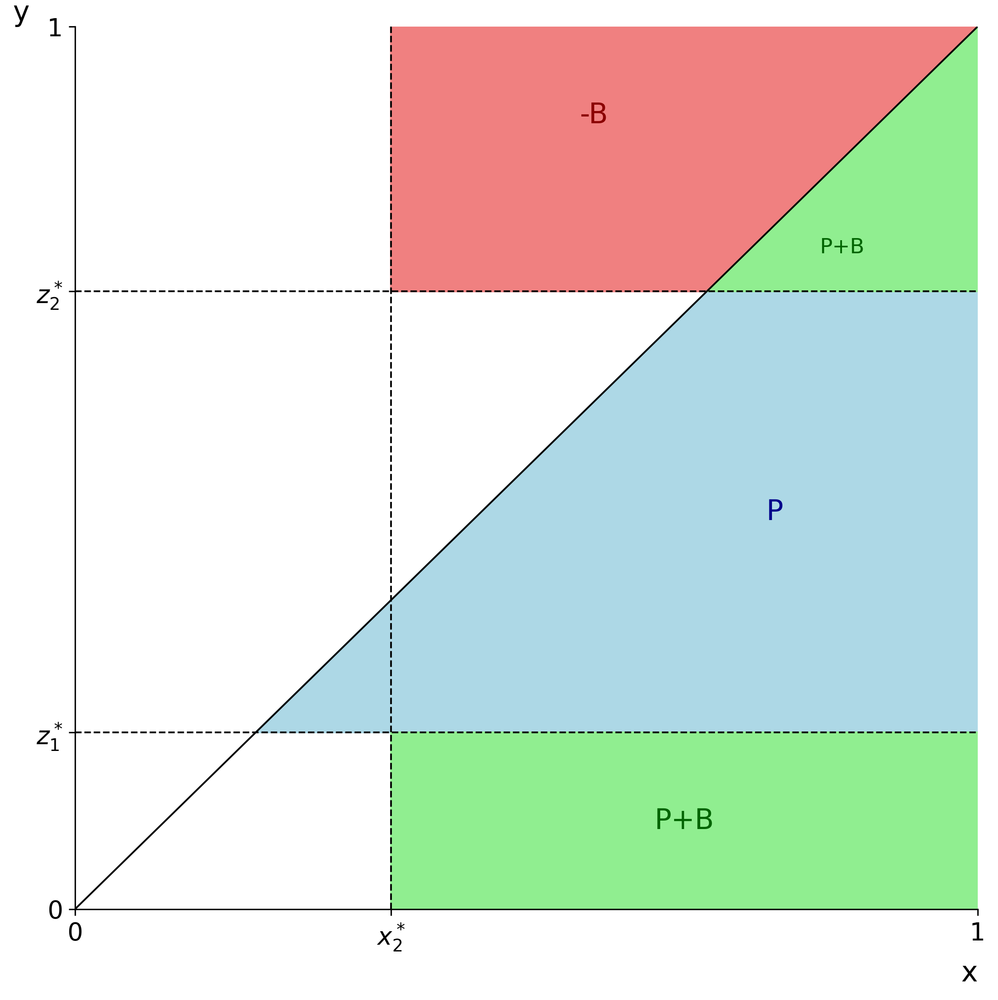

今天我們繼續比大小遊戲，但是上次假設，若先手 Player A check，則強制攤牌。這次我們來討論更一般的情況: Player B 可以選擇主動下注。
不過我們還是先忽略可以加注 (raise) 的情況。
遊戲規則: [0,1] 連續版本
- 玩家：Player A 與 Player B。
- 底池 (Pot)：\(P\) 元（可視為雙方起始強迫下注 \(P/2\)）。
- 發牌：雙方從 \([0,1]\) 均勻分布抽取一個數字作為自己的牌面數字，彼此互不知情。
- 攤牌時勝負判定：
- 數字較大者獲勝，贏走底池。
- 若數字相同則平手，雙方拿回各自的下注。
- 下注流程：
- 設定每次下注金額為 \(B\) 元。
- Player A（先手）：可以選擇 下注 (Bet) 或 過牌 (Check)。
- 若 Player A 選擇 過牌 (Check)，則輪到 Player B 行動，B 同樣可以選擇 下注 或 過牌。
- 若 Player A 選擇 下注 (Bet)，則輪到 Player B 行動，B 可以選擇 跟注 (Call) 或 棄牌 (Fold)。
有了之前的經驗，我們知道 Player A 的策略會變成兩個函數 \(a_1(x), a_2(x)\)，Player B 的策略也是兩個函數 \(b_1(y), b_2(y)\)，
- \(a_1(x)\)：Player A 在起始點的策略，決定是否下注 (Bet)。
- \(b_1(y)\)：Player B 在面對 Player A 下注 (A Bet) 時的策略，決定是否跟注 (Call)。
- \(b_2(y)\)：Player B 在面對 Player A 過牌 (A Check) 時的策略，決定是否偷底 (Bet)。
- \(a_2(x)\)：Player A 在面對 Player B 偷底 (B Bet) 時的策略，決定是否跟注 (Call)。
根據這個設定本身，在 \(a_1(x)=1\) 時，\(a_2(x)\) 是多少都不影響結果。所以這本來就是 coupled 的一組策略函數。
Player A 的期望值
遊戲有五種結局，我們寫個表來看看他們分別對 Player A 的 payoff 是多少：
| 若 \(x > y\) | 若 \(x = y\) | 若 \(x < y\) | |
|---|---|---|---|
| 結局 1 (A bet, B call) | \(P+B\) | \(P/2\) | \(-B\) |
| 結局 2 (A bet, B fold) | \(P\) | \(P\) | \(P\) |
| 結局 3 (A check, B bet, A call) | \(P+B\) | \(P/2\) | \(-B\) |
| 結局 4 (A check, B bet, A fold) | \(0\) | \(0\) | \(0\) |
| 結局 5 (A check, B check) | \(P\) | \(P/2\) | \(0\) |
同樣的，我們忽略相等的情況 (機率為零)，然後寫一下機率密度:
\[ \begin{array}{|l|c|c|l|} \hline \textbf{結局路徑} & \textbf{若 } x > y & \textbf{若 } x < y & \textbf{機率密度} \\ \hline \text{1. A Bet, B Call} & P+B & -B & a_1(x) \cdot b_1(y) \\ \hline \text{2. A Bet, B Fold} & P & P & a_1(x) \cdot (1 - b_1(y)) \\ \hline \text{3. A Check, B Bet, A Call} & P+B & -B & (1 - a_1(x)) \cdot b_2(y) \cdot a_2(x) \\ \hline \text{4. A Check, B Bet, A Fold} & 0 & 0 & (1 - a_1(x)) \cdot b_2(y) \cdot (1 - a_2(x)) \\ \hline \text{5. A Check, B Check} & P & 0 & (1 - a_1(x)) \cdot (1 - b_2(y)) \\ \hline \end{array} \]
接著利用這張表，我們將各結局的「機率密度」與「損益」相乘，並對所有可能的牌型 \(x, y\) 積分，即可寫出 Player A 的期望值函數。
我將第 4 項（結局 4）省略了，因為其損益為 0，對積分沒有貢獻。
\[ \begin{aligned} &\mathbb{E}[\text{Payoff}_A] := \mathcal{L}(a_1, a_2, b_1, b_2) \\ &= \int_0^1 \int_0^1 \Bigg[ \\ &\quad a_1(x) \cdot b_1(y) \cdot \Big( (P+B)\mathbb{1}_{x>y} - B\mathbb{1}_{x<y} \Big) &\qquad\text{(結局 1: A Bet, B Call)} \\ &\quad + a_1(x) \cdot (1 - b_1(y)) \cdot P &\qquad\text{(結局 2: A Bet, B Fold)} \\ &\quad + (1 - a_1(x)) \cdot b_2(y) \cdot a_2(x) \cdot \Big( (P+B)\mathbb{1}_{x>y} - B\mathbb{1}_{x<y} \Big) &\qquad\text{(結局 3: A Check, B Bet, A Call)} \\ &\quad + (1 - a_1(x)) \cdot (1 - b_2(y)) \cdot P \cdot \mathbb{1}_{x>y} &\qquad\text{(結局 5: A Check, B Check)} \\ &\quad \Bigg] dy \, dx \end{aligned} \]
四個函數的變分
我們從最裡面解回來，也就是說，我們先假設 \(a_1(x), b_1(y), b_2(y)\) 已經定好了，然後我們來找出最佳的 \(a_2(x)\) 來最大化 Lagrangian。
解 \(a_2(x)\):
只需要考慮包含 \(a_2(x)\) 的項: \[ \begin{aligned} &\int_0^1 \int_0^1 (1 - a_1(x)) \cdot b_2(y) \cdot \textcolor{red}{a_2(x)} \cdot \Big( (P+B)\mathbb{1}_{x>y} - B\mathbb{1}_{x<y} \Big) dy \, dx \\ = &\int_0^1 (1 - a_1(x)) \cdot \textcolor{red}{a_2(x)} \cdot \underbrace{ \left( \int_0^1 b_2(y) \Big( (P+B)\mathbb{1}_{x>y} - B\mathbb{1}_{x<y} \Big) dy \right)}_{g(x)} dx \\ \end{aligned} \]
符合剛才的直覺，當 \(a_1(x)=1\) 時，\(a_2(x)\) 不影響結果。
這個 \(g(x)\) 的形式跟我們上一篇中的 \(h(y)\) 幾乎一樣。這也很合理，因為我們從最後一步開始解，而上一次就是單純解最後一步。
來快速算一下這個 \(g(x)\): \[ \begin{aligned} g(0) &= -B \cdot \int_0^1 b_2(y) dy \\ g(1) &= (P+B) \cdot \int_0^1 b_2(y) dy \\ g(x)' &= (P + 2B) \cdot b_2(x) \geq 0 \\ \end{aligned} \]
這個 \(g(x)\) 是從負值遞增，然後過零點，最後變成正值的函數。
那麼 \(a_2(x)\) 就是 \[ a_2(x) = \begin{cases} 0, & g(x) < 0 \\ 1, & g(x) > 0 \\ \text{Any}, & (1-a_1(x)) \cdot g(x) = 0 \\ \end{cases} \] 既然其他點可以取任意值，不妨假設 \[ a_2(x) = \mathbb{1}_{x > x_2^*} \tag{1}\label{eq:a2-strategy} \] 其中 \(x_2^*\) 是使 \(g(x_2^*)=0\) 的解。也就是 \[ \frac{\int_0^{x_2^*} b_2(y) dy}{\int_{x_2^*}^1 b_2(y) dy} = \frac{B}{P+B} \tag{2}\label{eq:x2-ratio} \]
解出 \(a_2(x)\) 後，接著解 \(b_1(y)\) 或 \(b_2(y)\) 都可以。因為沒有相依性。
解 \(b_1(x)\):
只需要考慮包含 \(b_1(y)\) 的項: \[ \begin{aligned} &\int_0^1 \int_0^1 a_1(x) \cdot \textcolor{red}{b_1(y)} \cdot \Big( (P+B)\mathbb{1}_{x>y} - B\mathbb{1}_{x<y} -P \Big) dy \, dx \\ = &\int_0^1 \textcolor{red}{b_1(y)} \cdot \underbrace{ \left( \int_0^1 a_1(x) \Big( B\mathbb{1}_{x>y} - (P+B)\mathbb{1}_{x<y} \Big) dx \right)}_{h(y)} dy \\ \end{aligned} \] 再來一次， \[ \begin{aligned} h(0) &= B \cdot \int_0^1 a_1(x) dx \\ h(1) &= -(P+B) \cdot \int_0^1 a_1(x) dx \\ h(y)' &= -(P+2B) \cdot a_1(y) \leq 0 \\ \end{aligned} \] 而 \(b_1(y)\) 要最小化它，所以存在一個切分點 \(y_1^*\) 使得 \[ b_1(y) = \mathbb{1}_{y > y_1^*} \tag{3}\label{eq:b1-strategy} \] 其中 \(y_1^*\) 是使 \(h(y_1^*)=0\) 的解。也就是 \[ \frac{\int_0^{y_1^*} a_1(x) dx}{\int_{y_1^*}^1 a_1(x) dx} = \frac{B}{P+B} \tag{4}\label{eq:y1-ratio} \] 這邊確實就跟上一篇一模一樣了，因為上一篇也有這個分支。
解 \(b_2(y)\):
考慮包含 \(b_2(y)\) 的項，此時把剛剛解的 \(a_2(x)\) 帶進去: \[ \begin{aligned} &\int_0^1 \int_0^1 (1 - a_1(x)) \cdot \textcolor{red}{b_2(y)} \cdot \Big[ \mathbb{1}_{x > x_2^*} \cdot \Big( (P+B)\mathbb{1}_{x>y} - B\mathbb{1}_{x<y} \Big) - P\mathbb{1}_{x>y} \Big] dy \, dx \\ = &\int_0^1 \textcolor{red}{b_2(y)} \cdot \left( \int_0^1 (1 - a_1(x)) \cdot \Big[ \mathbb{1}_{x > x_2^*} \cdot \Big( (P+B)\mathbb{1}_{x>y} - B\mathbb{1}_{x<y} \Big) - P\mathbb{1}_{x>y} \Big] dx \right) dy \\ \end{aligned} \] 這邊稍微複雜一點，因為 \(x_2^*\) 其實是根據 \(b_2(y)\) 決定的 (依照切分比例)。所以不能將 \(x_2^*\) 當成常數來看待。
交換一下順序，我們假設 \(x_2^*\) 是固定的，現在將 \(b_2(y)\) 拆成兩個區間來做變分，但有面積的條件: \[ \int_0^{x_2^*} b_2(y) dy : \int_{x_2^*}^1 b_2(y) dy = B : (P+B) \] 所以上面變成 \[ \begin{aligned} &\int_0^{1} \textcolor{red}{b_2(y)} \cdot \left( \int_0^1 (1 - a_1(x)) \cdot \Big[ \mathbb{1}_{x > x_2^*} \cdot \Big( (P+B)\mathbb{1}_{x>y} - B\mathbb{1}_{x<y} \Big) - P\mathbb{1}_{x>y} \Big] dx \right) dy \\ = &\int_0^{x_2^*} \textcolor{red}{b_2(y)} \cdot \underbrace{\left( \int_0^1 (1 - a_1(x)) \cdot \Big[ (P+B)\mathbb{1}_{x > x_2^*} - P\mathbb{1}_{x>y} \Big] dx \right)}_{k_1(y)} dy \\ &+ \int_{x_2^*}^{1} \textcolor{red}{b_2(y)} \cdot \underbrace{\left( \int_0^1 (1 - a_1(x)) \cdot \Big[ (P+B)\mathbb{1}_{x>y} - B\mathbb{1}_{x>x_2^*}\mathbb{1}_{x<y} - P\mathbb{1}_{x>y} \Big] dx \right)}_{k_2(y)} dy \\ \end{aligned} \] 如此一來又變回熟悉的形式了。 \[ \begin{aligned} k_1(0) &= (P+B) \cdot \int_{x_2^*}^1 (1 - a_1(x)) dx - P \cdot \int_0^1 (1 - a_1(x)) dx \\ &= B \cdot \int_{x_2^*}^1 (1 - a_1(x)) dx - P \cdot \int_0^{x_2^*} (1 - a_1(x)) dx \\ k_1(x_2^*) &= B \cdot \int_{x_2^*}^1 (1 - a_1(x)) dx \geq 0 \\ k_1(y)' &= P \cdot (1 - a_1(y)) \geq 0 \\ \end{aligned} \] 以及 \[ \begin{aligned} k_2(x_2^*) &= B \cdot \int_{x_2^*}^1 (1 - a_1(x)) dx \geq 0 \\ k_2(1) &= -B \cdot \int_{x_2^*}^1 (1 - a_1(x)) dx \leq 0 \\ k_2(y)' &= -2B \cdot (1-a_1(y)) \leq 0 \\ \end{aligned} \] 因此， \(k_2(y), k_1(y)\) 這兩個函數，分別是遞增與遞減，而 \(b_2(y)\) 要最小化整個式子，所以 \(b_2(y)\) 是極化的策略 (不妨假設\(k_1(0)<0\)，否則的話就取 \(z_1^*=0\) 即可，我們要解的是形狀): \[ b_2(y) = \mathbb{1}_{y < z_1^*} + \mathbb{1}_{y > z_2^*} \tag{5}\label{eq:b2-strategy} \] 其中 \(z_1^*, z_2^*\) 是使得 \(k_1(z_1^*)=0, k_2(z_2^*)=0\) 的解。
假設確實有 \(k_1(0)<0\)，那麼 \[ \int_{z_1^*}^{x_2^*} (1 - a_1(x)) dx = \frac{B}{P} \cdot \int_{x_2^*}^1 (1 - a_1(x)) dx \tag{6}\label{eq:z1-ratio} \] 以及 \[ \frac{\int_{x_2^*}^{z_2^*} (1 - a_1(x)) dx}{\int_{z_2^*}^1 (1 - a_1(x)) dx} = \frac{k_2(x_2^*)}{-k_2(1)} = \frac{B}{B} = 1 \tag{7}\label{eq:z2-ratio} \] 因此， \(z_1^*, z_2^*\) 是依照 \(a_1(x)\) 定義的。
等等，還有面積的條件需要滿足。但已經沒有自由度可以用了。也就是說最好的 \(b_2(y) = \mathbb{1}_{y < z_1^*} + \mathbb{1}_{y > z_2^*}\) 並不一定滿足面積比是 \(B:P+B\) 這個條件。
但我們現在假設 Player A 固定，所以 \(a_2(x)\) 是固定的。所以理解為，我們猜測 \(a_2(x)\) 的形狀，在這樣條件下來看 \(b_1(y), b_2(y)\) 可以打出的最佳進攻策略是什麼，而不需要滿足面積條件 \(\eqref{eq:x2-ratio}\) 。所以以上的推導依然成立。
解 \(a_1(x)\):
這邊解 \(a_1(x)\) 有兩種視角:
- 最佳進攻策略: 對於任意固定函數 \(b_1(y), b_2(y)\)，我們來看如何攻擊這組 \(b_1, b_2\) (最大化 Lagrangian)。但上面的討論告訴我們，我們不用解最一般的情形，可以假設它的形狀是 \(\eqref{eq:b1-strategy}\), \(\eqref{eq:b2-strategy}\)。
- 最佳防守策略: 將上面解出的 \(b_1(y), b_2(y)\) 帶回 Lagrangian，然後解 \(a_1(x)\) 來最大化 Lagrangian，也就是被 Player B 已知 \(a_1(x)\) 的情形之下，要如何防守的概念，因為這裡 \(b_1(y), b_2(y)\) 可以隨著 \(a_1(x)\) 改變而改變。
這兩種視角都挺重要的，也都有意義。但因為 Nash Equilibrium 是在講最佳防守，所以我們先用第二種視角來看。
如果從 Player A 的防守視角來看，當固定 \(a_1(x)\) 和 \(x_2^*\) 且被 Player B 已知的情形下，Player B 對於 \(b_1(y), b_2(y)\) 的最佳攻擊策略是什麼? 利用 \(\eqref{eq:b1-strategy}\), \(\eqref{eq:b2-strategy}\)，我們將期約化為三個變數:
- \(y_1^*\): 把 \(a_1(x)\) 底下的面積切成 \(B : (P+B)\) 的比例。
- \(z_1^*, z_2^*\): 先從 \(x_2^*\) 切開，然後選擇 \(z_1^*\) 滿足 \(\eqref{eq:z1-ratio}\)，接著選擇 \(z_2^*\) 滿足 \(\eqref{eq:z2-ratio}\)。
這樣確實是 Player B 對 Player A 最嚴厲的攻擊。但有個風險，因為沒有滿足 \(\eqref{eq:x2-ratio}\)，所以如果 Player A 改變 \(x_2^*\)，就可以對 Player B 進行剝削。(至於這一來一往是正的還是負的? 感覺不好估計)
我們換個角度想，Player B 能不能選 \(z_1^*, z_2^*\) 使得就算 Player A 改變 \(x_2^*\) 也不會被剝削?
也就是要把 \(z_1^*, z_2^*\) 選成跟 \(x_2^*\) 無關的形式。回頭看看 \(\eqref{eq:z1-ratio}\), \(\eqref{eq:z2-ratio}\)，我們發現只要滿足下面的條件就可以了: \[ \begin{cases} \displaystyle \int_{\textcolor{red}{z_1^*}}^{\textcolor{red}{z_2^*}} (1 - a_1(x)) dx : \int_{\textcolor{red}{z_2^*}}^1 (1 - a_1(x)) dx = (B + \frac{P}{2}) : \frac{P}{2} \\ \displaystyle \textcolor{red}{z_1^*} : (1 - \textcolor{red}{z_2^*}) = B : (P+B) \end{cases} \tag{9}\label{eq:z1z2-equations} \] 這邊很巧妙把 \(B:P\) 和 \(1:1\)，變成了 \(B + \frac{P}{2} : \frac{P}{2}\)，如此一來就跟 \(x_2^*\) 無關，而多出來的自由度可以讓 Player B 調整 \(z_1^*, z_2^*\) 來滿足面積條件 \(\eqref{eq:x2-ratio}\)。
這邊有點一直交換 Min-Max的順序來論證，應該是對的。
現在我們得到小結論，Player B 只要知道 \(a_1(x)\)，就可以選出一組 \(b_1(y), b_2(y)\) (也就是 \(y_1^*, z_1^*, z_2^*\)) 來攻擊 Player A。
所以問題已經約化到只剩最後一個函數: \(a_1(x)\)，要取多少可以最大化 Lagrangian。
先來看看完整的 Lagrangian，我們先在沒有 \(\eqref{eq:z1z2-equations}\) 約束下解，也就是這邊的等式對於一般的 \(y_1^*, z_1^*, z_2^*\) 都成立 (順便研究 Player A 的攻擊策略): \[ \begin{align} &\mathcal{L}(a_1, a_2, b_1, b_2) \\ &= \int_0^1 \int_0^1 \left[ \begin{aligned} & a_1(x) \cdot \mathbb{1}_{y>y_1^*} \cdot \Big( (P+B)\mathbb{1}_{x>y} - B\mathbb{1}_{x<y} \Big) \\ + & a_1(x) \cdot (1 - \mathbb{1}_{y>y_1^*}) \cdot P \\ + & (1 - a_1(x)) \cdot (\mathbb{1}_{y < z_1^*} + \mathbb{1}_{y > z_2^*}) \cdot (\mathbb{1}_{x>x_2^*}) \cdot \Big( (P+B)\mathbb{1}_{x>y} - B\mathbb{1}_{x<y} \Big) \\ + & (1 - a_1(x)) \cdot (1 - \mathbb{1}_{y < z_1^*} - \mathbb{1}_{y > z_2^*}) \cdot P \mathbb{1}_{x>y} \end{aligned} \right] dy \, dx \\ &= \int_0^1 \int_0^1 \underbrace{\Big[ (\mathbb{1}_{y < z_1^*} + \mathbb{1}_{y > z_2^*}) \cdot \mathbb{1}_{x>x_2^*} \cdot \Big( (P+B)\mathbb{1}_{x>y} - B\mathbb{1}_{x<y} \Big) + (1 - \mathbb{1}_{y < z_1^*} - \mathbb{1}_{y > z_2^*}) \cdot P \mathbb{1}_{x>y} \Big]}_{J(x,y)} dy \, dx \\ &\quad + \int_0^1 \textcolor{red}{a_1(x)} \cdot \underbrace{\left( \int_0^1 \left[ \begin{aligned} & \mathbb{1}_{y>y_1^*} \cdot \Big( (P+B)\mathbb{1}_{x>y} - B\mathbb{1}_{x<y} \Big) + (1 - \mathbb{1}_{y>y_1^*}) \cdot P \\ & - (\mathbb{1}_{y < z_1^*} + \mathbb{1}_{y > z_2^*}) \cdot \mathbb{1}_{x>x_2^*} \cdot \Big( (P+B)\mathbb{1}_{x>y} - B\mathbb{1}_{x<y} \Big) \\ & - (1 - \mathbb{1}_{y < z_1^*} - \mathbb{1}_{y > z_2^*}) \cdot P \mathbb{1}_{x>y} \end{aligned} \right] dy \right)}_{G(x)} dx \end{align} \] 有些些混亂，我們把大於的符號一律改成小於的方向，看比較清楚。
\[ \begin{align} \mathcal{L}(a_1, a_2, b_1, b_2) &= \int_0^1 \int_0^1 J(x,y) \, dy \, dx + \int_0^1 \textcolor{red}{a_1(x)} \cdot G(x) \, dx \\ \text{其中} \quad J(x,y) &= (\mathbb{1}_{y < z_1^*} + \mathbb{1}_{z_2^* < y}) \cdot \mathbb{1}_{x_2^* < x} \cdot \Big( (P+B)\mathbb{1}_{y < x} - B\mathbb{1}_{x < y} \Big) + \mathbb{1}_{z_1^* \le y \le z_2^*} \cdot P \mathbb{1}_{y < x} \\ G(x) &= \int_0^1 \left[ \begin{aligned} & \mathbb{1}_{y_1^* < y} \cdot \Big( (P+B)\mathbb{1}_{y < x} - B\mathbb{1}_{x < y} \Big) + P \mathbb{1}_{y \le y_1^*} \\ & - \mathbb{1}_{x_2^* < x} \cdot (\mathbb{1}_{y < z_1^*} + \mathbb{1}_{z_2^* < y}) \cdot \Big( (P+B)\mathbb{1}_{y < x} - B\mathbb{1}_{x < y} \Big) \\ & - P \mathbb{1}_{z_1^* \le y \le z_2^*} \cdot \mathbb{1}_{y < x} \end{aligned} \right] dy \end{align} \] 好，雖然有點小複雜，但這都是 indicator function，積分通常可以直接算出來。

我們先假設有 \(z_1^* \leq x_2^* \leq z_2^*\)， \[ \begin{aligned} \int_0^1 \int_0^1 J(x,y) \, dy \, dx &= P\cdot (z_2^* - z_1^*)(1-\frac{z_2^* + z_1^*}{2}) \\ &\quad + (P+B)\cdot \left( \frac{(1-z_2^*)^2}{2} + z_1^*(1-x_2^*) \right) \\ &\quad - B \cdot (1-z_2^*)(\frac{1+z_2^*}{2} - x_2^*) \\ &= P \cdot \left[ \frac{(1-z_1^*)^2}{2} + z_1^*(1-x_2^*) \right] + B \cdot \left[ z_1^*(1-x_2^*) - (1-z_2^*)(z_2^* - x_2^*) \right] \end{aligned} \]
已經有點醜了，再來試試看 \(G(x)\)，注意到積分後半段跟剛才的 \(J(x,y)\) 其實一樣，然後前半段相對簡單。 \[ \begin{align} G(x) &= \underbrace{ \begin{cases} (P+B)y_1^* - B & \text{if } x \le y_1^* \\ (P+2B)x - B(1+y_1^*) & \text{if } x > y_1^* \end{cases} }_{\text{Part 1: } y_1^* \text{ Dependent Terms}} \\ &\qquad + \underbrace{ \begin{cases} 0 & \text{if } x < z_1^* \\ -P(x - z_1^*) & \text{if } z_1^* \le x \le x_2^* \\ -Px + B(1 - z_1^* - z_2^*) & \text{if } x_2^* < x < z_2^* \\ -(P+2B)x + B(1 - z_1^* + z_2^*) & \text{if } x \ge z_2^* \end{cases} }_{\text{Part 2: } z_1^*, x_2^*, z_2^* \text{ Dependent Terms}} \tag{8}\label{eq:Gx-pieces} \end{align} \]
其實還不算是太醜(?)，基本上是由折線線段組成的，但在第二項 \(x=x_2^*\) 有個(可能)不連續的點。而這個點若要連續，就是要滿足面積比例的條件!! \[ z_1^* : (1-z_2^*) = B : (P+B) \]
現在我們使用 \(\eqref{eq:z1z2-equations}\) 的條件，所以以下結果開始基於有面積比例的條件。
\(J(x,y)\) 積分變得好看很多，而 \(G(x)\) 第二項也會連續。因為前後兩段斜率相同，所以會直接變一段。
\[ \int_0^1 \int_0^1 J(x,y) \, dy \, dx = \frac{P}{2}(1-z_1^*)^2 + B(1-z_2^*)^2 \] \[ \begin{align} G_1(x) &= \begin{cases} (P+B)y_1^* - B & \text{, if } x \le y_1^* \\ (P+2B)x - B(1+y_1^*) & \text{, if } x > y_1^* \end{cases} \\ G_2(x) &= \begin{cases} 0 & \text{, if } x < z_1^* \\ P(x - z_1^*) & \text{, if } z_1^* \le x \le z_2^* \\ (P+2B)(x+z_1^*) - 2B & \text{, if } x \ge z_2^* \end{cases} \\ G(x) &= G_1(x) - G_2(x) \\ \end{align} \] 我們把 \(G\) 拆分成兩個，第二個加了負號，這樣一來斜率都是正的了。還有做了一些簡單的代數代換，讀者可自行驗證。
現在帶回 Lagrangian，這邊回憶一下，從推導過程可以發現 其實 \(G_2(x) = \int_0^1 J(x,y) dy\) ，所以我們把常數項合併回去給 \(G_2\): \[ \begin{align} \mathcal{L}(a_1) &= \int_0^1 \int_0^1 J(x,y) \, dy \, dx + \int_0^1 a_1(x) \cdot G(x) \, dx \\ &= \int_0^1 a_1(x) \cdot G_1(x) \, dx + \int_0^1 (1 - a_1(x)) \cdot G_2(x) \, dx \\ \end{align} \] 我們又回到了簡潔的式子，第一項就是 Player A bet 的情況，第二項是 Player A check 的情況。
交換一下順序，假設 \(y_1^*\) 固定，\(z_2^* = 1 - \frac{P+B}{B}z_1^*\)。待會再回來解 \(y_1^*, z_1^*\)。
根據 \(\eqref{eq:z1z2-equations}\)，在這兩個條件下，我們來看 \(a_1(x)\) 要怎麼取可以最大化 Lagrangian。
\[ \begin{align} \mathcal{L}(a_1) &= \int_0^{y_1^*} a_1(x)\cdot \Big((P+B)y_1^* - B\Big) \, dx + \int_{y_1^*}^1 a_1(x) \cdot \Big( (P+2B)x - B(1+y_1^*) \Big) dx \\ &\quad + \int_{z_1^*}^{z_2^*} (1 - a_1(x)) \cdot P(x - z_1^*) \, dx \\ &\quad + \int_{z_2^*}^1 (1 - a_1(x)) \cdot \Big( (P+2B)(x+z_1^*) - 2B \Big) dx \\ \end{align} \] 神奇的是，Part 1 的 \(y_1^*\) 自己消掉了，而 Part 2 的 \(z_1^*\) 也自己消掉了。 $$ \[\begin{align} \mathcal{L}(a_1) &= y_1^* \cdot \underbrace{\left( \int_0^{y_1^*} a_1(x)\cdot(P+B) \, dx - \int_{y_1^*}^1 a_1(x) \cdot B dx \\ \right)}_{=0} \\ &\quad + (P+2B) \cdot \int_{y_1^*}^1 a_1(x) \cdot x \, dx - B \int_{0}^1 a_1(x) \, dx \\ &\quad + z_1^* \cdot \underbrace{\left( \int_{z_1^*}^{z_2^*} (1 - a_1(x)) \cdot (-P) \, dx + \int_{z_2^*}^1 (1 - a_1(x)) \cdot (P+2B) \, dx \right)}_{=0} \\ &\quad + (2P+2B) \cdot \int_{z_1^*}^1 (1 - a_1(x)) \cdot x \, dx - 2B \int_{z_2^*}^1 (1 - a_1(x)) \, dx \\ &= (P+2B) \cdot \int_{y_1^*}^1 a_1(x) \cdot x \, dx - B \int_{0}^1 a_1(x) \, dx \\ &\quad + 2(P+B) \cdot \int_{z_1^*}^1 (1 - a_1(x)) \cdot x \, dx - 2B \int_{z_2^*}^1 (1 - a_1(x)) \, dx \end{align}\] $$
居然剩下乾乾淨淨的四項，最後來解一下面積，直覺上 \(y_1^*\) 應該在 \(z_1^*\) 和 \(z_2^*\) 之間，但等等可能還是要檢查一下其他狀況。我們假設面積 \[ \begin{aligned} \int_0^{z_1^*} a_1(x) dx &= A_1 \\ \int_{z_1^*}^{y_1^*} a_1(x) dx &= A_2 \\ \int_{y_1^*}^{z_2^*} a_1(x) dx &= A_3 \\ \int_{z_2^*}^1 a_1(x) dx &= A_4 \\ \end{aligned} \] 現在在固定 \(z_1^*, y_1^*, z_2^*\) 之下，去看面積要如何分配。先列一下等式 \[ \begin{aligned} \frac{A_1 + A_2}{A_3 + A_4} &= \frac{B}{P+B} \\ \frac{z_2^*-z_1^* - A_2 - A_3}{1 - z_2^* - A_4} &= \frac{2B + P}{P} \\ \frac{z_1^*}{1 - z_2^*} &= \frac{B}{P+B} \\ \end{aligned} \] 可以都用 \(A_4\) 來表示: \[ A_2 + A_3 = z_2^*-z_1^* - (1 - z_2^* - A_4)\cdot \frac{2B + P}{P} \]
繼續假設 \(z_1^* \le y_1^* \le z_2^*\)，我們來看 Lagrangian: \[ \begin{aligned} \mathcal{L}(a_1) &= -P \int_{z_1^*}^{1} a_1(x)\cdot x \, dx - (P+2B) \int_{z_1^*}^{y_1^*} a_1(x)\cdot x \, dx \\ &\quad -B\cdot (A_1 + A_2 + A_3 + A_4) + 2B \cdot A_4 \\ &\quad + 2(P+B) \cdot \frac{1-(z_1^*)^2}{2} -2B \cdot (1 - z_2^*) \\ \end{aligned} \]